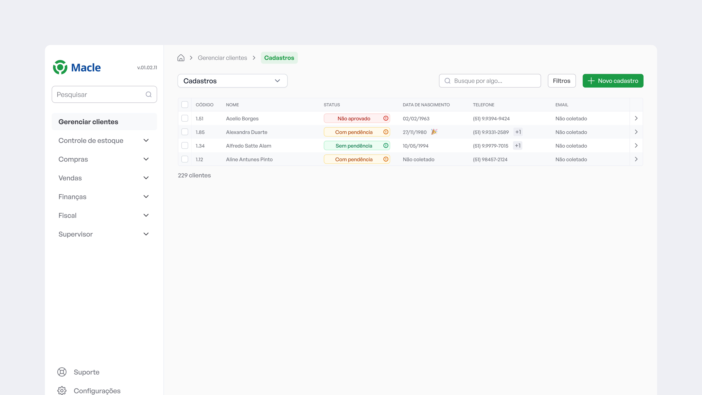
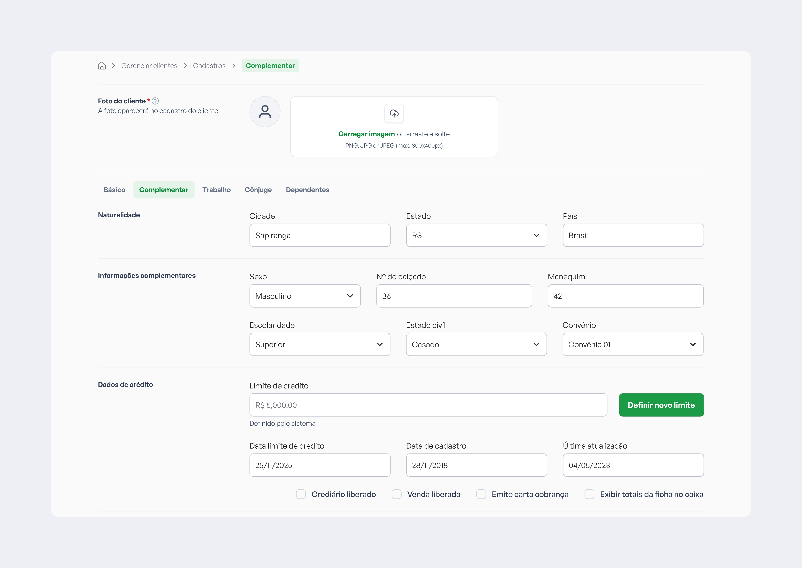
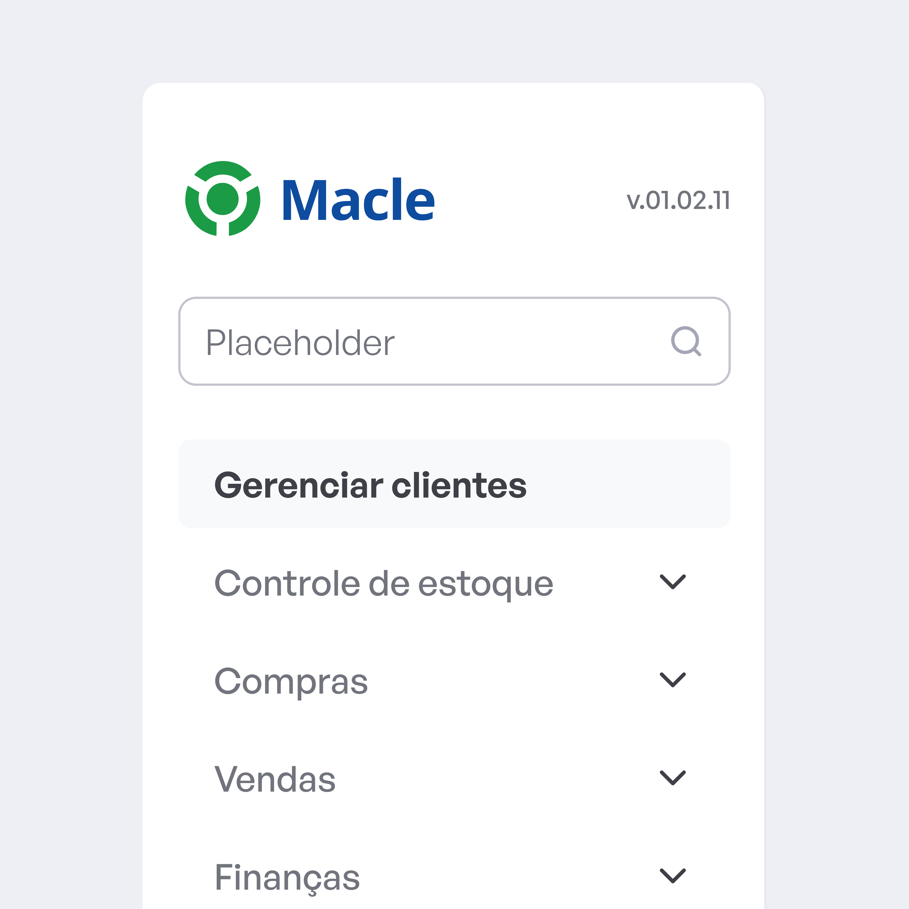
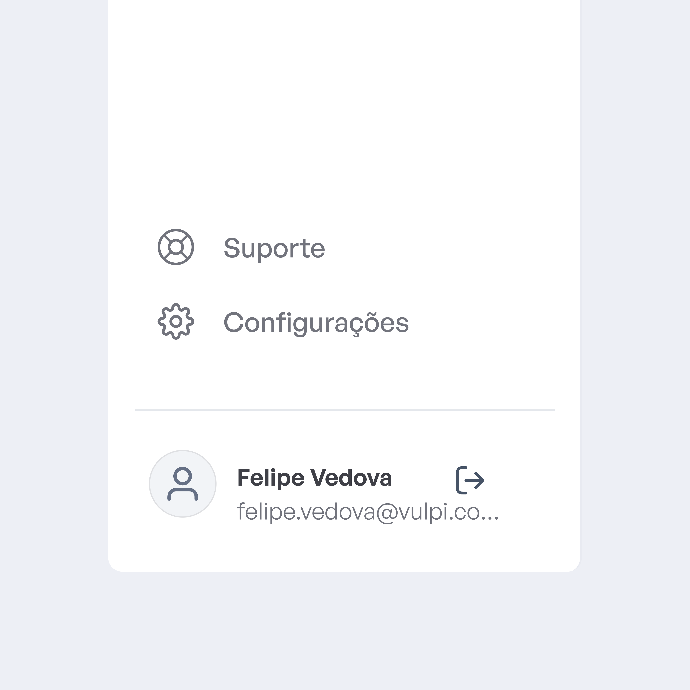
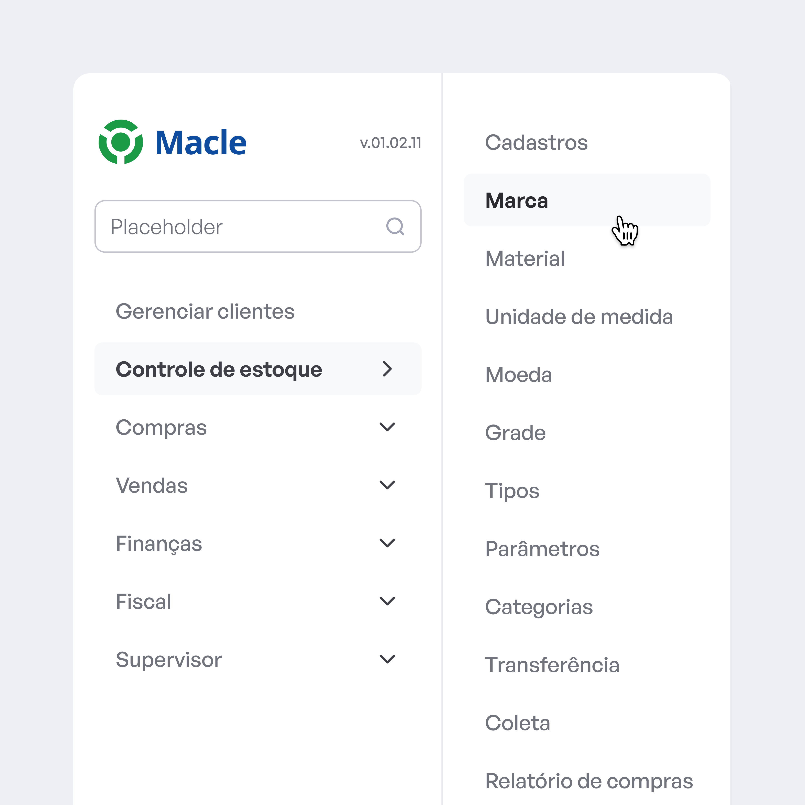
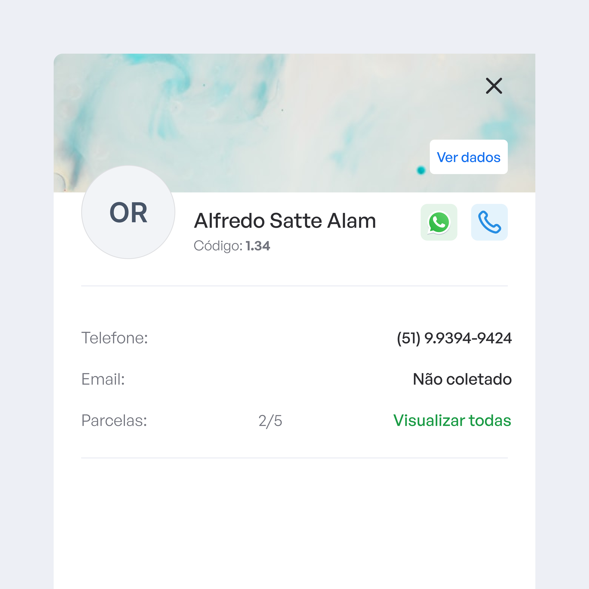
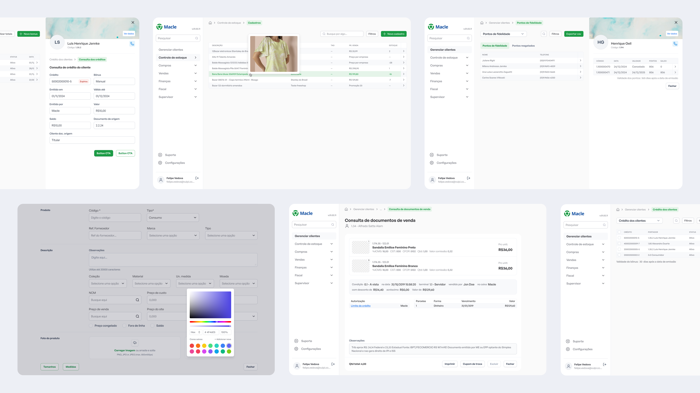
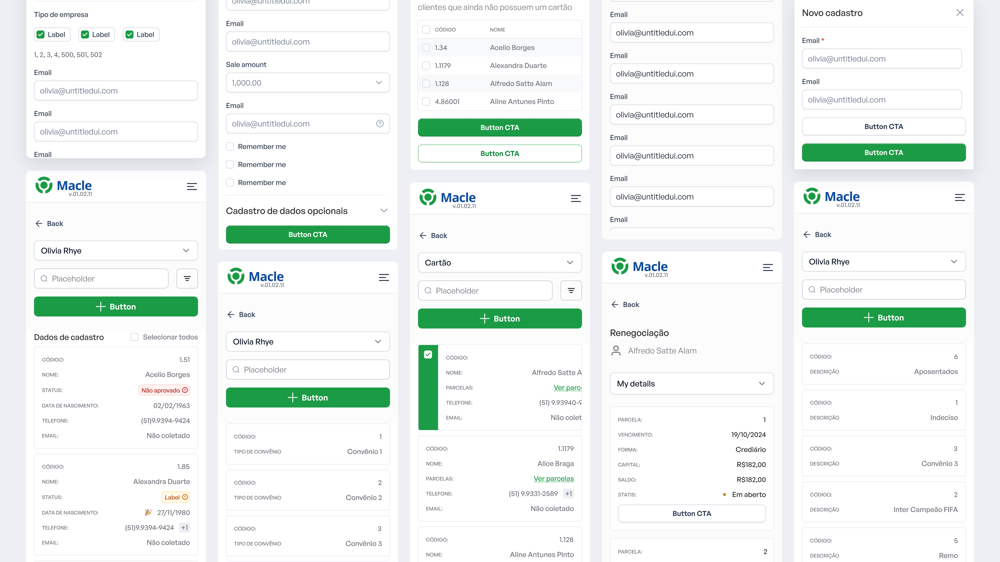

Mais clareza para o ERP da Macle

- Cliente
- Macle Sistemas
- Ano
- 2024
- Tipo
- ERP para lojas de calçados
- Role
- UX/UI Design
O cenário
O ERP da Macle era utilizado principalmente por lojas de calçados para gestão de operações como vendas, estoque, pedidos e controle financeiro. Por se tratar de um sistema presente no dia a dia do negócio, a eficiência da experiência impactava diretamente a produtividade das equipes e a tomada de decisão.
Com o crescimento do produto, a interface começou a apresentar sinais de complexidade excessiva, com fluxos pouco claros e uma experiência que exigia maior esforço operacional dos usuários.



O que o VulpiStudio precisava resolver
O desafio estava em reduzir a complexidade do sistema sem comprometer sua robustez, tornando a experiência mais clara, eficiente e adaptada à rotina de uso intensivo. Era necessário facilitar tarefas operacionais críticas, como gestão de estoque e vendas, ao mesmo tempo em que se melhorava a organização da informação e a previsibilidade dos fluxos.


Hipótese de solução
A estratégia partiu da hipótese de que uma experiência mais estruturada, com melhor hierarquia de informação e fluxos mais consistentes, poderia reduzir o esforço cognitivo dos usuários e aumentar a eficiência operacional.
A proposta foi reorganizar a base do sistema, priorizando clareza, consistência e rapidez de execução, tratando o ERP não apenas como um conjunto de funcionalidades, mas como uma ferramenta de trabalho central para o dia a dia das lojas.

Como implementamos a solução
A implementação focou na reestruturação dos fluxos principais do sistema, com ênfase em vendas, controle de estoque e navegação entre módulos. Foram revisados padrões de interação, organização de telas e apresentação de dados, buscando tornar a experiência mais previsível e fácil de operar.
O trabalho também considerou a frequência de uso das funcionalidades, priorizando acessos rápidos, redução de etapas e maior eficiência nas tarefas mais recorrentes.

E esses foram os resultados
O redesenho resultou em uma experiência mais eficiente e orientada à operação, com projeção de 35% de redução no tempo de execução de tarefas críticas, 29% menos dependência de suporte para dúvidas operacionais e um aumento de 31% na produtividade percebida pelos usuários.
Além dos ganhos operacionais, o projeto estabeleceu uma base mais consistente para evolução do sistema, tornando o ERP mais escalável e alinhado às necessidades reais das lojas.